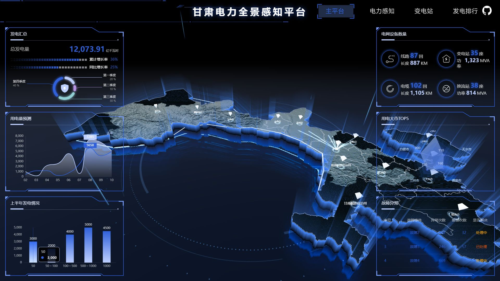
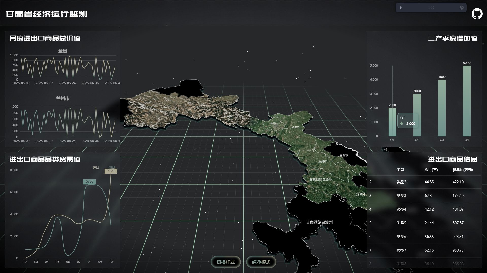
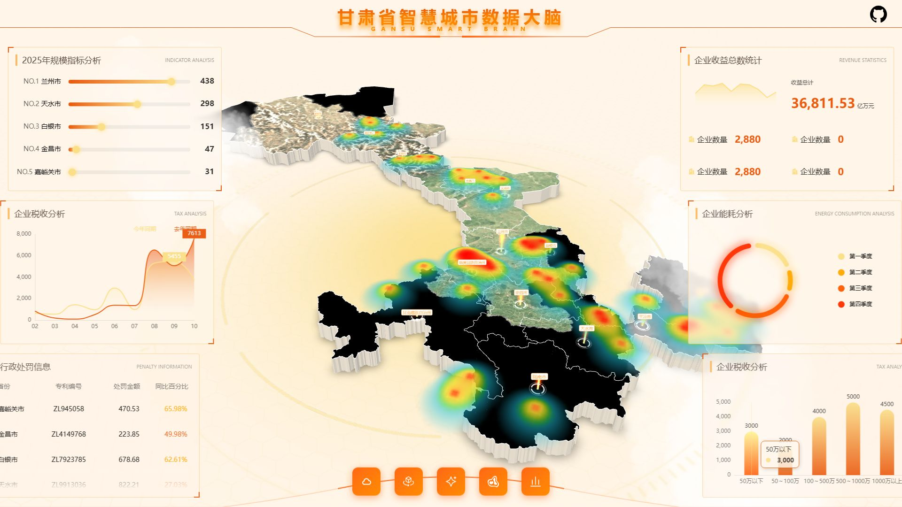
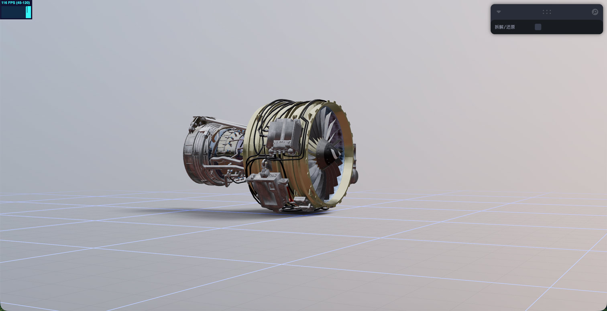

GANSU PROVINCE DATA VISUALIZATION DASHBOARD
本项目以甘肃省 14 个地级市/自治州为数据主体，构建了一套面向政府决策、企业管理及公共服务场景的 3D 数据可视化大屏系统。采用 React 19 + TypeScript 作为前端框架，结合 Three.js 实现三维地图渲染，ECharts 6 负责多维度图表分析，通过 WebGL 着色器技术打造沉浸式视觉体验。
涵盖四大可视化场景：经济运行监测、智慧城市数据大脑、电力全景感知平台及风力发电机模型展示，每个场景均包含独立的 3D 地图渲染、交互动画与数据面板。
项目已部署上线至 http://121.40.248.245/，已开源至 GitHub：https://github.com/andanlandian23/sc-datav.git

电力全景感知平台使用阿里云 DataV.GeoAtlas 获取甘肃省 14 个地级市的 GeoJSON 矢量地理数据，通过 D3-geo 的 geoMercator 投影算法将经纬度坐标精确映射为 Three.js 3D 空间坐标。
const projection = geoMercator() .center(centroid) .translate([0, 0]); const [x, y] = projection( feature.centroid); return new Vector3(x, -y);

经济运行监测基于 GeoJSON 与 d3-geo 投影，14 个地级市精确三维渲染，支持立体拉伸与纹理映射
onBeforeCompile 注入 GLSL，实现轮廓扫光、彗星尾飞线等视觉效果
ECharts 6 驱动柱状图、折线图、雷达图等多种数据面板
autofit.js 响应式布局 + Zustand 轻量状态管理
项目采用组件化开发模式，每个可视化场景独立封装，通过 React Router 实现路由切换，GSAP 驱动页面过渡动画。Three.js 场景基于 @react-three/fiber 渲染，结合 Drei 提供的轨道控制器、环境贴图等辅助组件，大幅降低 WebGL 开发门槛。
数据面板通过 ECharts 6 的按需引入策略，仅加载柱状图、折线图、雷达图等所需组件，有效控制打包体积。虚拟滚动组件支持实时数据表的高性能渲染，保障大屏长时间运行的流畅性。

智慧城市数据大脑使用 ExtrudeGeometry 对城市区域三维拉伸，Shape + Extrude 从 2D 轮廓生成 3D 块体。柱体采用 CylinderGeometry，底部旋转光环使用 TorusGeometry。风力发电机采用 GLB 模型配合 Bloom 后处理。
onBeforeCompile={(shader) => {
shader.vertexShader = shader.vertexShader
.replace("void main() {",
"attribute float percent;\nvoid main() {")
.replace("gl_PointSize = size;",
"gl_PointSize = percent * size;");
shader.fragmentShader = shader.fragmentShader
.replace("#include <output_fragment>",
`float r = distance(gl_PointCoord,
vec2(0.5));
float alpha = pow(1.0-r/0.5, 6.0);
gl_FragColor = vec4(gl_FragColor.rgb,
gl_FragColor.a * alpha);`);
}}

风力发电机模型拆解卫星遥感贴图纹理映射 + 法线贴图增强凹凸细节 + 位移贴图微地形起伏，RepeatWrapping 无缝平铺。